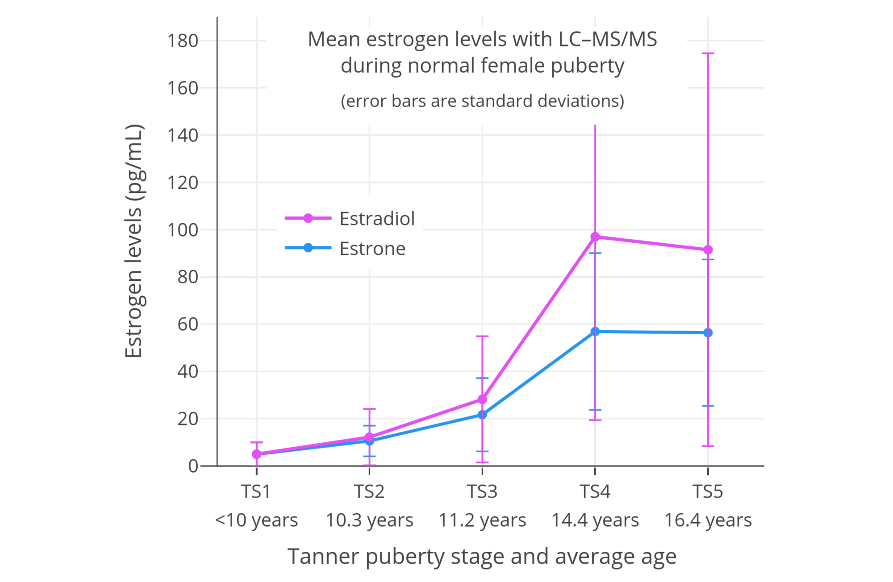
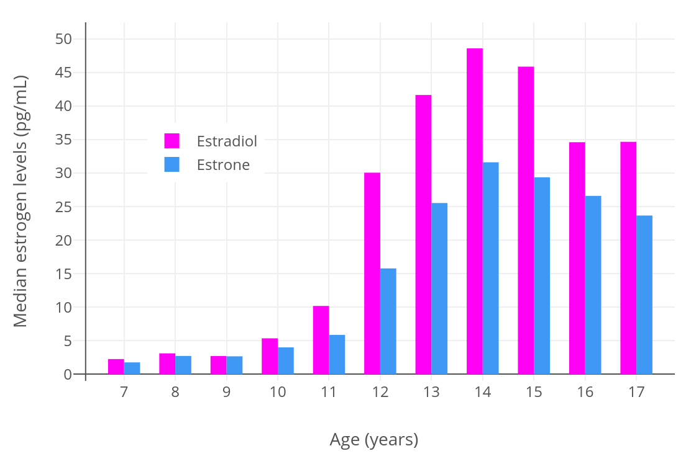

Hormone Levels During Normal Puberty in Cisgender Girls
By Aly | First published April 29, 2020 | Last modified April 7, 2023
Preface
This is a collection of published data on hormone levels throughout normal puberty in cisgender girls. Levels of estrogens (estradiol and estrone), progesterone, and androgens are included. Data are limited to those determined with mass spectrometry-based analytic techniques wherever available.
Estrogen Levels
Esoterix/LabCorp (2020)
Esoterix/LabCorp. (2020). Endocrinology Expected Values and S.I. Unit Conversion Tables. LabCorp/Endocrine Sciences. [PDF]:
Table: Estradiol and estrone levels in cisgender girls and women (HPLC–MS/MS):
| Estradiol | Estrone | ||||
|---|---|---|---|---|---|
| Life stage | Age (years) | Mean (pg/mL) | Range (pg/mL) | Mean (pg/mL) | Range (pg/mL) |
| Tanner stage 1 | <9.2 | 8.0 | 5.0–20 | 13 | 4.0–29 |
| Tanner stage 2 | 9.2–13.7 | 16 | 10–24 | 21 | 10–33 |
| Tanner stage 3 | 10.0–14.4 | 25 | 7.0–60 | 30 | 15–43 |
| Tanner stage 4 | 10.7–15.6 | 47 | 21–85 | 36 | 16–77 |
| Tanner stage 5 | 11.8–18.6 | 110 | 34–170 | 61 | 29–105 |
| Adult follicular | >18.0 | ? | 30–100 | ? | 30–100 |
| Adult luteal | >18.0 | ? | 70–300 | ? | 90–160 |
Figure: Mean (± ref. range) estradiol and estrone levels in normal female puberty (HPLC–MS/MS):
Frederiksen et al. (2020)
Frederiksen, H., Johannsen, T. H., Andersen, S. E., Albrethsen, J., Landersoe, S. K., Petersen, J. H., Andersen, A. N., Vestergaard, E. T., Schorring, M. E., Linneberg, A., Main, K. M., Andersson, A. M., & Juul, A. (2020). Sex-specific estrogen levels and reference intervals from infancy to late adulthood determined by LC-MS/MS. The Journal of Clinical Endocrinology & Metabolism, 105(3), 754–768. [DOI:10.1210/clinem/dgz196]:
(The graphs below were created from analysis of this study by Sam.)
Figure: Mean (± SD) estradiol and estrone levels in normal female puberty (LC–MS/MS):

Figure: Median (± SD) estradiol and estrone levels in normal female puberty (LC–MS/MS):

The lower estradiol and estrone levels in TS5 relative to TS4 are likely due to sampling error.
Kushnir et al. (2008)
Kushnir, M. M., Rockwood, A. L., Bergquist, J., Varshavsky, M., Roberts, W. L., Yue, B., Bunker, A. M., & Meikle, A. W. (2008). High-sensitivity tandem mass spectrometry assay for serum estrone and estradiol. American Journal of Clinical Pathology, 129(4), 530–539. [DOI:10.1309/LC03BHQ5XJPJYEKG]:
Table: Estradiol and estrone levels in cisgender girls and women (LC–MS/MS):
| Estradiol | Estrone | |
|---|---|---|
| Life stage or age (years) | Ref. range (pg/mL) | Ref. range (pg/mL) |
| Tanner stage 1 | <55 | <26 |
| Tanner stage 2 | 2–133 | 1–39 |
| Tanner stage 3 | 12–277 | 8–117 |
| Tanner stage 4/5 | 2–259 | 4–109 |
| Before menarche | 1–84 | <41 |
| After menarche | 3–264 | 4–113 |
| 7–9 years | <35 | <25 |
| 10–12 years | <87 | <42 |
| 13–15 years | 9–248 | 8–105 |
| 16–17 years | 2–266 | 4–133 |
| Postmenopausal (41–63 years) | 2–21 | 3–32 |
Figure: Median estradiol and estrone levels around puberty in cisgender girls (LC–MS/MS):

It should be noted however that this study has been criticized on methodological grounds (Ankarberg-Lindgren & Norjavaara, 2009a; Ankarberg-Lindgren & Norjavaara, 2009b).
Janfaza et al. (2006)
Janfaza, M., Sherman, T. I., Larmore, K. A., Brown-Dawson, J., & Klein, K. O. (2006). Estradiol levels and secretory dynamics in normal girls and boys as determined by an ultrasensitive bioassay: a 10 year experience. Journal of Pediatric Endocrinology and Metabolism, 19(7), 901–910. [DOI:10.1515/JPEM.2006.19.7.901]:
Table: Estradiol levels in 375 cisgender girls (RCBA—ultrasensitive recombinant cell bioassay):
| Pubertal stage | n | Mean age (years) | Mean estradiol (pg/mL) | Estradiol range (pg/mL) |
|---|---|---|---|---|
| 1 | 147 | 8.7 ± 1.7 | 1.6 ± 2.6 | <0.02–18 |
| 2 | 68 | 11.1 ± 1.1 | 6.9 ± 1.1 | <0.02–40 |
| 3 | 55 | 11.9 ± 1.1 | 23 ± 33 | <0.02–147 |
| 4 | 68 | 13.4 ± 1.4 | 27 ± 38 | 0.10–270 |
| 5 | 37 | 15.0 ± 1.6 | 48 ± 65 | 0.49–306 |
Madsen et al. (2020)
Madsen, A., Bruserud, I. S., Bertelsen, B. E., Roelants, M., Oehme, N. H. B., Viste, K., Bjerknes, R., Almås, B., Rosendahl, K., Mellgren, G., Sagen, J. V., & Juliusson, P. B. (2020). Hormone references for ultrasound breast staging and endocrine profiling to detect female onset of puberty. The Journal of Clinical Endocrinology & Metabolism, 105(12), e4886–e4895. [DOI:10.1210/clinem/dgaa679]:
Table: Estradiol and estrone levels in cisgender girls (LC–MS/MS):
| Estradiol (pg/mL) | Estrone (pg/mL) | ||||
|---|---|---|---|---|---|
| Tanner stage | n | Median | Range (2.5–97.5%) | Median | Range (2.5–97.5%) |
| B1 | 260 | 1.3 | 0.24–10 | 3.8 | 1.2–10 |
| B2 | 69 | 6.5 | 1.6–56 | 9.2 | 3.5–32 |
| B3 | 63–66 | 25 | 1.2–77 | 21 | 3.2–52 |
| B4 | 73–78 | 48 | 7.1–219 | 32 | 11–108 |
| B5 | 76–81 | 41 | 13–268 | 36 | 15–129 |
Other Studies
- Courant, F., Aksglaede, L., Antignac, J. P., Monteau, F., Sorensen, K., Andersson, A. M., Skakkebaek, N. E., Juul, A., & Bizec, B. L. (2010). Assessment of circulating sex steroid levels in prepubertal and pubertal boys and girls by a novel ultrasensitive gas chromatography-tandem mass spectrometry method. The Journal of Clinical Endocrinology & Metabolism, 95(1), 82–92. [DOI:10.1210/jc.2009-1140]
- Biro, F. M., Pinney, S. M., Huang, B., Baker, E. R., Walt Chandler, D., & Dorn, L. D. (2014). Hormone changes in peripubertal girls. The Journal of Clinical Endocrinology & Metabolism, 99(10), 3829–3835. [DOI:10.1210/jc.2013-4528]
- Ankarberg-Lindgren, C., Dahlgren, J., & Andersson, M. X. (2018). High-sensitivity quantification of serum androstenedione, testosterone, dihydrotestosterone, estrone and estradiol by gas chromatography–tandem mass spectrometry with sex-and puberty-specific reference intervals. The Journal of Steroid Biochemistry and Molecular Biology, 183, 116–124. [DOI:10.1016/j.jsbmb.2018.06.005]
- Note: Has estrone sulfate levels in the different Tanner breast stages.
- Bae, Y. J., Zeidler, R., Baber, R., Vogel, M., Wirkner, K., Loeffler, M., Ceglarek, U., Kiess, W., Körner, A., Thiery, J., & Kratzsch, J. (2019). Reference intervals of nine steroid hormones over the life-span analyzed by LC-MS/MS: Effect of age, gender, puberty, and oral contraceptives. The Journal of Steroid Biochemistry and Molecular Biology, 193, 105409. [DOI:10.1016/j.jsbmb.2019.105409]
Progesterone Levels
Esoterix/LabCorp (2020)
Esoterix/LabCorp. (2020). Endocrinology Expected Values and S.I. Unit Conversion Tables. LabCorp/Endocrine Sciences. [PDF] [Alt] [Alt]:
Table: Progesterone levels in cisgender girls and women (HPLC–MS/MS):
| Life stage / age (years) | Range (ng/mL) |
|---|---|
| <10 years | ≤0.26 |
| 11 years | ≤2.6 |
| 12 years | ≤8.6 |
| 13 years | ≤6.9 |
| 14 years | ≤12.0 |
| 15 years | ≤10.8 |
| 16 years | ≤12.9 |
| Adult early follicular (days 1–6) | ≤0.17 |
| Adult late follicular (days 7–12) | ≤1.4 |
| Adult mid-cycle (days 13–15) | ≤15.6 |
| Adult luteal (days 16–28)* | ≤25.6 |
| Postmenopausal | ≤0.10 |
| Pregnancy first trimester | 6.3–45.5 |
| Pregnancy second trimester | 15.4–52.1 |
| Pregnancy third trimester | 25.0–99.9 |
Note: Luteal progesterone peaked from 3.5 to 37.5 ng/dL ranging on cycle days 17 to 23.
Progesterone levels in males: ≤0.15 ng/mL (age 1–16 years) and ≤0.11 ng/mL (adult).
Fisher, Salameh, & Furlanetto / Quest Diagnostics (2007)
Fisher, D. A., Salameh, W., & Furlanetto, R. W. (2007). [The Quest Diagnostics Manual:] Endocrinology: Test Selection and Interpretation, 4th Edition. San Juan Capistrano, California: Quest Diagnostics. [Google Scholar] [Google Books] [WorldCat] [PDF] [Alt PDF] [Alt]:
Table: Progesterone levels in cisgender girls and women (LC–MS/MS):
| Life stage / age | Range (ng/mL) |
|---|---|
| 5–9 years | ≤0.6 |
| 10–13 years | ≤10.2 |
| 14–17 years | ≤11.9 |
| Adult early follicular | ≤0.6 |
| Adult late follicular | ≤14.5 |
| Adult mid-cycle | ≤16.1 |
| Adult luteal | ≤31.4 |
| Postmenopausal | ≤0.2 |
Progesterone levels in males: ≤1.2 ng/mL (age 5–17 years) and ≤0.3 ng/mL (adult).
Wu (2006)
Wu, A. H. B. (2006). Tietz Clinical Guide to Laboratory Tests, 4th Edition. St Louis: Saunders/Elsevier. [Google Scholar] [Google Books] [OpenLibrary] [WorldCat] [PDF] [Alt]:
Table: Progesterone levels in cisgender girls and women (RIA):
| Life stage | Range (ng/dL) |
|---|---|
| Tanner stage 1 | ≤0.33 |
| Tanner stage 2 | ≤0.55 |
| Tanner stage 3 | ≤4.5 |
| Tanner stage 4 | ≤13.0 |
| Tanner stage 5 | ≤9.5 |
| Adult follicular | 0.15–0.70 |
| Adult luteal | 2.0–25.0 |
| Adult postmenopausal | ≤0.40 |
| Pregnancy first trimester | 10.3–44.0 |
| Pregnancy second trimester | 19.5–82.5 |
| Pregnancy third trimester | 65.0–229.0 |
Progesterone levels in males: <0.10–1.1 ng/mL (age 1–10 years + puberty) and 0.13–0.97 ng/mL (adult).
Note: RIA gives less accurate and often overestimated values relative to MS-based techniques.
Kühnel (2000)
Kühnel, W. (2000). IMMULITE® and IMMULITE® 2000 Reference Range Compendium, First English Edition. Los Angeles, California: Diagnostic Products Corporation. [Google Scholar] [URL] [PDF 1] [PDF 2]:
Table: Progesterone levels in cisgender girls and women (IA):
| Life stage / age (years) | n | Median (ng/mL) | Range (variable) (ng/mL) |
|---|---|---|---|
| 7–8 years | 24 | 0.50 | 0.25–0.99 |
| 9–10 years | 40 | 0.55 | 0.13–1.00 |
| 11 years | 22 | 0.66 | 0.37–0.92 |
| 12 years | 17 | 0.78 | 0.49–1.68 |
| 13 years | 25 | 0.72 | 0.40–1.46 |
| 14 years | 30 | 1.20 | 0.56–12.3 |
| 15 years | 48 | 1.40 | 0.70–13.4 |
| 16 years | 40 | 5.0 | 0.65–14.5 |
| 17 years | 30 | 1.40 | 0.77–11.3 |
| 18–19 years | 12 | 2.4 | 1.27–13.0 |
| Tanner stage 1 | 28 | 0.46 | 0.23–0.77 |
| Tanner stage 2–3 | 70 | 0.70 | 0.36–2.2 |
| Tanner stage 4 | 30 | 1.25 | 0.57–9.5 |
| Tanner stage 5 | 66 | 2.4 | 0.75–14.6 |
| Adult follicular | 382 | 0.47 | ND–1.13 |
| Adult mid-follicular (days 5–11) | 186 | 0.43 | ND–0.98 |
| Adult mid-cycle | 27 | 1.06 | 0.48–1.72 |
| Adult luteal | 323 | 8.9 | 0.95–21 |
| Adult mid-luteal (days 7–8) | 54 | 13.1 | 6.0–24 |
| Pregnancy first trimester | 28 | 22.2 | 9.3–33.2 |
| Pregnancy second trimester | 10 | 35.4 | 29.5–50.0 |
| Pregnancy third trimester | 8 | 102 | 83.1–160 |
Abbreviations/etc.: n = tests, not subjects; range = 90%, 95%, or absolute range; ND = not detectable.
Note: IA gives less accurate and often overestimated values relative to MS-based techniques.
Other Studies
- Ceglarek, U., Werner, M., Kortz, L., Körner, A., Kiess, W., Thiery, J., & Kratzsch, J. (2010). Preclinical challenges in steroid analysis of human samples. The Journal of Steroid Biochemistry and Molecular Biology, 121(3–5), 505–512. [DOI:10.1016/j.jsbmb.2010.03.039]
Androgen Levels
Esoterix/LabCorp (2020)
Esoterix/LabCorp. (2020). Endocrinology Expected Values and S.I. Unit Conversion Tables. LabCorp/Endocrine Sciences. [PDF]:
Table: Total testosterone levels in cisgender girls and women (HPLC–MS/MS):
| Life stage | Age (years) | Mean (ng/dL) | Range (ng/dL) |
|---|---|---|---|
| Tanner stage 1 | <9.2 | 4.9 | <2.5–10 |
| Tanner stage 2 | 9.2–13.7 | 18 | 7–28 |
| Tanner stage 3 | 10.0–14.4 | 25 | 15–35 |
| Tanner stage 4 | 10.7–15.6 | 22 | 13–32 |
| Tanner stage 5 | 11.8–18.6 | 28 | 20–38 |
| Adult premenopausal | >18.0 | ? | 10–55 |
| Adult postmenopausal | ⪆50 years | ? | 7–40 |
Table: Dihydrotesterone (DHT) levels in cisgender girls and women (HPLC–MS/MS):
| Life stage | Age (years) | Mean (ng/dL) | Range (ng/dL) |
|---|---|---|---|
| Tanner stage 1 | <9.2 | ? | <3 |
| Tanner stage 2 | 9.2–13.7 | 8 | 5–12 |
| Tanner stage 3 | 10.0–14.4 | 12 | 7–19 |
| Tanner stage 4 | 10.7–15.6 | 7 | 4–13 |
| Tanner stage 5 | 11.8–18.6 | 9 | 3–18 |
| Adult | >18.0 | ? | 4–22 |
Table: Androstenedione levels in cisgender girls and women (HPLC–MS/MS):
| Life stage | Age (years) | Mean (ng/dL) | Range (ng/dL) |
|---|---|---|---|
| Tanner stage 1 | <9.2 | <10 | <10–17 |
| Tanner stage 2 | 9.2–13.7 | 33 | 10–72 |
| Tanner stage 3 | 10.0–14.4 | 97 | 50–170 |
| Tanner stage 4 | 10.7–15.6 | 105 | 47–208 |
| Tanner stage 5 | 11.8–18.6 | 137 | 50–224 |
| Adult premenopausal | 18–40 years | ? | 28–230 |
| Adult postmenopausal | ⪆50 years | ? | <10–93 |
Table: Dehydroepiandrosterone sulfate (DHEA-S) levels in cisgender girls/women (HPLC–MS/MS):
| Life stage | Age (years) | Mean (ng/dL) | Range (ng/dL) |
|---|---|---|---|
| Tanner stage 1 | <9.2 | 40 | 19–144 |
| Tanner stage 2 | 9.2–13.7 | 72 | 34–129 |
| Tanner stage 3 | 10.0–14.4 | 88 | 32–226 |
| Tanner stage 4 | 10.7–15.6 | 120 | 58–260 |
| Tanner stage 5 | 11.8–18.6 | 148 | 44–248 |
| Adult premenopausal | 18–50 years | ? | 17–372 |
| Adult postmenopausal | ⪆50 years | ? | <215 |
ARUP Laboratories (Undated)
ARUP Laboratories. (Undated). Testosterone, Free and Total, Includes Sex Hormone-Binding Globulin (Adult Females, Children, or Individuals on Testosterone-Suppressing Hormone Therapy). ARUP Laboratories. [URL] [Alt]:
Table: Total and free testosterone levels in cisgender girls and women (LC–MS/MS):
| Life stage / age | Total: Range (ng/dL) | Free: Range (pg/mL) |
|---|---|---|
| Tanner stage 1 | 2–17 ng/dL | <2.2 |
| Tanner stage 2 | 5–40 ng/dL | 0.4–4.5 |
| Tanner stage 3 | 10–63 ng/dL | 1.3–7.5 |
| Tanner stage 4 | 11–62 ng/dL | 1.1–15.5 |
| Tanner stage 5 | 11–62 ng/dL | 0.8–9.2 |
| 1–6 years | <30 ng/dL | <0.6 |
| 7–9 years | 1–11 ng/dL | 0.6–1.8 |
| 10–11 years | 3–32 ng/dL | 0.1–3.5 |
| 12–13 years | 6–50 ng/dL | 0.9–6.8 |
| 14–15 years | 6–52 ng/dL | 1.2–7.5 |
| 16–17 years | 9–58 ng/dL | 1.2–9.9 |
| 18–30 years | 9–55 ng/dL | 0.8–7.4 |
| 31–40 years | 9–55 ng/dL | 1.3–9.2 |
| 41–51 years | 9–55 ng/dL | 1.1–5.8 |
| Postmenopausal | 5–32 ng/dL | 0.6–3.8 |
Other Studies
- Kushnir, M. M., Rockwood, A. L., Roberts, W. L., Pattison, E. G., Bunker, A. M., Fitzgerald, R. L., & Meikle, A. W. (2006). Performance characteristics of a novel tandem mass spectrometry assay for serum testosterone. Clinical Chemistry, 52(1), 120–128. [DOI:10.1373/clinchem.2005.052167]
- Kushnir, M. M., Blamires, T., Rockwood, A. L., Roberts, W. L., Yue, B., Erdogan, E., Bunker, A. M., & Meikle, A. W. (2010). LC-MS/MS assay for androstenedione, dehydroepiandrosterone and testosterone with pediatric and adult reference intervals. Clinical Chemistry, 56(7), 1138–1147. [DOI:10.1373/clinchem.2010.143222]
Prolactin Levels
- Kühnel, W. (2000). IMMULITE® and IMMULITE® 2000 Reference Range Compendium, First English Edition. Los Angeles, California: Diagnostic Products Corporation. [Google Scholar] [URL] [PDF 1] [PDF 2]
References
- Ankarberg-Lindgren, C., & Norjavaara, E. (2009). Are Estradiol Results Determined by the Tandem Mass Spectrometry Assay Clinically Useful for Children? American Journal of Clinical Pathology, 131(5), 746–750. [DOI:10.1309/ajcpnanprf50lchn]
- Ankarberg-Lindgren, C., & Norjavaara, E. (2009). Estradiol in Pediatric Endocrinology. American Journal of Clinical Pathology, 132(6), 978–980. [DOI:10.1309/ajcpa65ouufasoan]
- Ankarberg-Lindgren, C., Dahlgren, J., & Andersson, M. X. (2018). High-sensitivity quantification of serum androstenedione, testosterone, dihydrotestosterone, estrone and estradiol by gas chromatography–tandem mass spectrometry with sex-and puberty-specific reference intervals. The Journal of Steroid Biochemistry and Molecular Biology, 183, 116–124. [DOI:10.1016/j.jsbmb.2018.06.005]
- ARUP Laboratories. (Undated). Testosterone, Free and Total, Includes Sex Hormone-Binding Globulin (Adult Females, Children, or Individuals on Testosterone-Suppressing Hormone Therapy). ARUP Laboratories. [URL] [Alt]:
- Bae, Y. J., Zeidler, R., Baber, R., Vogel, M., Wirkner, K., Loeffler, M., Ceglarek, U., Kiess, W., Körner, A., Thiery, J., & Kratzsch, J. (2019). Reference intervals of nine steroid hormones over the life-span analyzed by LC-MS/MS: Effect of age, gender, puberty, and oral contraceptives. The Journal of Steroid Biochemistry and Molecular Biology, 193, 105409. [DOI:10.1016/j.jsbmb.2019.105409]
- Biro, F. M., Pinney, S. M., Huang, B., Baker, E. R., Walt Chandler, D., & Dorn, L. D. (2014). Hormone changes in peripubertal girls. The Journal of Clinical Endocrinology & Metabolism, 99(10), 3829–3835. [DOI:10.1210/jc.2013-4528]
- Ceglarek, U., Werner, M., Kortz, L., Körner, A., Kiess, W., Thiery, J., & Kratzsch, J. (2010). Preclinical challenges in steroid analysis of human samples. The Journal of Steroid Biochemistry and Molecular Biology, 121(3–5), 505–512. [DOI:10.1016/j.jsbmb.2010.03.039]
- Courant, F., Aksglaede, L., Antignac, J. P., Monteau, F., Sorensen, K., Andersson, A. M., Skakkebaek, N. E., Juul, A., & Bizec, B. L. (2010). Assessment of circulating sex steroid levels in prepubertal and pubertal boys and girls by a novel ultrasensitive gas chromatography-tandem mass spectrometry method. The Journal of Clinical Endocrinology & Metabolism, 95(1), 82–92. [DOI:10.1210/jc.2009-1140]
- Esoterix/LabCorp. (2020). Endocrinology Expected Values and S.I. Unit Conversion Tables. LabCorp/Endocrine Sciences. [PDF]
- Fisher, D. A., Salameh, W., & Furlanetto, R. W. (2007). [The Quest Diagnostics Manual:] Endocrinology: Test Selection and Interpretation, 4th Edition. San Juan Capistrano, California: Quest Diagnostics. [Google Scholar] [Google Books] [WorldCat] [PDF] [Alt PDF]
- Frederiksen, H., Johannsen, T. H., Andersen, S. E., Albrethsen, J., Landersoe, S. K., Petersen, J. H., Andersen, A. N., Vestergaard, E. T., Schorring, M. E., Linneberg, A., Main, K. M., Andersson, A. M., & Juul, A. (2020). Sex-specific estrogen levels and reference intervals from infancy to late adulthood determined by LC-MS/MS. The Journal of Clinical Endocrinology & Metabolism, 105(3), 754–768. [DOI:10.1210/clinem/dgz196]
- Janfaza, M., Sherman, T. I., Larmore, K. A., Brown-Dawson, J., & Klein, K. O. (2006). Estradiol levels and secretory dynamics in normal girls and boys as determined by an ultrasensitive bioassay: a 10 year experience. Journal of Pediatric Endocrinology and Metabolism, 19(7), 901–910. [DOI:10.1515/JPEM.2006.19.7.901]
- Kushnir, M. M., Rockwood, A. L., Roberts, W. L., Pattison, E. G., Bunker, A. M., Fitzgerald, R. L., & Meikle, A. W. (2006). Performance characteristics of a novel tandem mass spectrometry assay for serum testosterone. Clinical Chemistry, 52(1), 120–128. [DOI:10.1373/clinchem.2005.052167]
- Kühnel, W. (2000). IMMULITE® and IMMULITE® 2000 Reference Range Compendium, First English Edition. Los Angeles, California: Diagnostic Products Corporation. [Google Scholar] [URL] [PDF 1] [PDF 2]
- Kushnir, M. M., Rockwood, A. L., Bergquist, J., Varshavsky, M., Roberts, W. L., Yue, B., Bunker, A. M., & Meikle, A. W. (2008). High-sensitivity tandem mass spectrometry assay for serum estrone and estradiol. American Journal of Clinical Pathology, 129(4), 530–539. [DOI:10.1309/LC03BHQ5XJPJYEKG]
- Kushnir, M. M., Blamires, T., Rockwood, A. L., Roberts, W. L., Yue, B., Erdogan, E., Bunker, A. M., & Meikle, A. W. (2010). LC-MS/MS assay for androstenedione, dehydroepiandrosterone and testosterone with pediatric and adult reference intervals. Clinical Chemistry, 56(7), 1138–1147. [DOI:10.1373/clinchem.2010.143222]
- Madsen, A., Bruserud, I. S., Bertelsen, B. E., Roelants, M., Oehme, N. H. B., Viste, K., Bjerknes, R., Almås, B., Rosendahl, K., Mellgren, G., Sagen, J. V., & Juliusson, P. B. (2020). Hormone references for ultrasound breast staging and endocrine profiling to detect female onset of puberty. The Journal of Clinical Endocrinology & Metabolism, 105(12), e4886–e4895. [DOI:10.1210/clinem/dgaa679]
- Wu, A. H. B. (2006). Tietz Clinical Guide to Laboratory Tests, 4th Edition. St Louis: Saunders/Elsevier. [Google Scholar] [Google Books] [OpenLibrary] [WorldCat] [PDF]